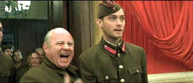
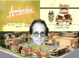

| Enemy at the Gates (SE)/B,A- |
| Paramount/2001/ |
Plenty of raw ammunition is available to Enemy at the Gates. When
the heart of the film is in it sights, the film stays near target center. But you can't help but
be disappointed that it does not stay on target all the way.
During World War II a decisive battle is being fought as the Germans attempt to
capture Russian Stalingrad. Russian soldiers are cheaper than bullets. They perish in wave after
wave. The army is totally dishearten when an amazing marksman surfaces to inspire his fellow
countrymen. Young bumpkin Vasilli Zaitsev, a crack shot with a rifle, is discovered by young
Commissar Danilov. As Zaitsev becomes a sniper, Danilov promotes his deeds to legendary status. The
Russians recognize Zaitsev as a threat to their own morale and a crack marksman of their own,
aristocratic Major Konig arrives in Stalingrad armed with a rifle and an animal's sense of the
hunt. The
cat and mouse drama that evolves between sharpshooters Zaitsev and Konig is consistently effective, carefully maximizing
tension.
 |
| Khrushchev introduces Zaitsev to the press. ©Paramount |
Jean-Jacques Annaud is adept at helming a big production. Production design is staggeringly good.
The large set pieces are often breathtaking. The random chaos of bombed out Stalingrad is
perfection itself. But Annaud can't hit center target with a bent gun sight. Worst of all is the battlefield
romantic triangle between Zaitsev, Tania and Danilov. It's like putting strong sauce on a perfect
piece of meat. All the personal stories except the Zaitsev/Konig dance of death are stiffly
performed. And even though the back and forth hunt intensifies as the film reaches its climax,
it begins falling apart as plot knots are tied.
Ed Harris is great as Konig. He's even more skilled at looking through a sniper site than
brushing paint on canvas in the recent Pollack. Harris's dialogue is blessedly limited. He
does a lot with a little. The intensity of his performance anchors the film. Jude Law, on the other
hand, is okay as Zaitsev. I can't even finger my exact criticism of the performance. Maybe it's the
dialogue he has to chew through. Maybe the relationship with his Commissar
friend does him in. Joseph Fiennes doesn't do much to make Danilov a three dimensional character.
Bob Hoskins put a great deal of energy into Nikita Khrushchev to good effect. Rachel Weisz has the
mostly thankless task of playing Tania.
Enemy at the Gates is a very dark film filled with lots of gray tones.
Good shadow detail is essential to the success of the disc and this baby is a stunner in
that area. Black levels are excellent as well. Color is muted or saturated accurately capturing the
filmmakers' intent. The transfer is delivered with excellent resolution marred only by slight edginess, Surround information
is dynamic, recreating the bi battle sequences with ferocity. The sound of a single shot rings
through the home theater with purposeful penetration..
There are two featurettes totaling 35 minutes as well as nine deleted scenes are
included in the special edition.

Selections from the Feature Archive
include articles on Akira Kurosawa, Frank
Darabont, Blonde Bimbos, Hollywood Street Gangs, or Vietnam: The
Hollywood Pariah, and many more....

During World War II, Hollywood pumped out war movies one after the other. Vietnam was was another
story. As far as Hollywood was concerned it was a pariah.
Transferring
Zoetrope's Vision 
American Zoetrope's Technical Director Kim Aubry talks about bringing the studios product out in
the best light. Click on the image for the interview.

The Movie Poster Archive includes extensive poster images from the films of stars like Susan Hayward, Kirk Douglas, Katharine Hepburn and many more. Our featured star is Tyrone Power.


ISF Monitor Calibrations in the
Tristate New York area. Lots of hardware info and frequent hardware peaks from video expert Kevin
Miller.They may be judgmental, but that's the point, isn't it. Lots of DVD reviews plus news and
more.

News, information, features about current films in theaters and in the
pipeline. Easy to use interface.

The Cinema Laser
A home grown magazine for laserphiles that has been publishing for a number of years and has
embraced DVD in a big way. Lots of helpful information.